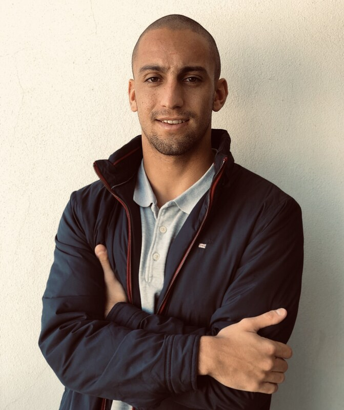
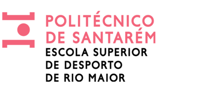

AI & Dev
- Cursor
- Claude Code
- Codex
- Gemini
- Replit
- AI Workflows

Available for selected opportunities
AI Product Builder · Digital Operations · Sports Management
Building AI-powered systems that make teams faster and smarter. Currently shipping internal tools and GTM automations at Oktogon Labs while leading product strategy at Surf Clube da Madeira.
Entrepreneurial professional blending technology and business. I design and ship AI-powered products at Oktogon Labs while leading digital strategy at Surf Clube da Madeira. My background bridges sports management, business sciences and modern AI-assisted development — I enjoy turning operational chaos into clear, automated systems that move the needle.
Oktogon Labs · Lisboa, Portugal · Hybrid · Part-time
1-year contract · AI & GTM
Oktogon Labs · Lisboa, Portugal
4 months
Surf Clube da Madeira · Madeira, Portugal
Surf Association — Autonomous Region of Madeira · Funchal
Portuguese Olympic Committee (COP) · Lisbon

I'm open to roles and projects at the intersection of AI products, GTM operations and business strategy. The fastest way to reach me is by email.